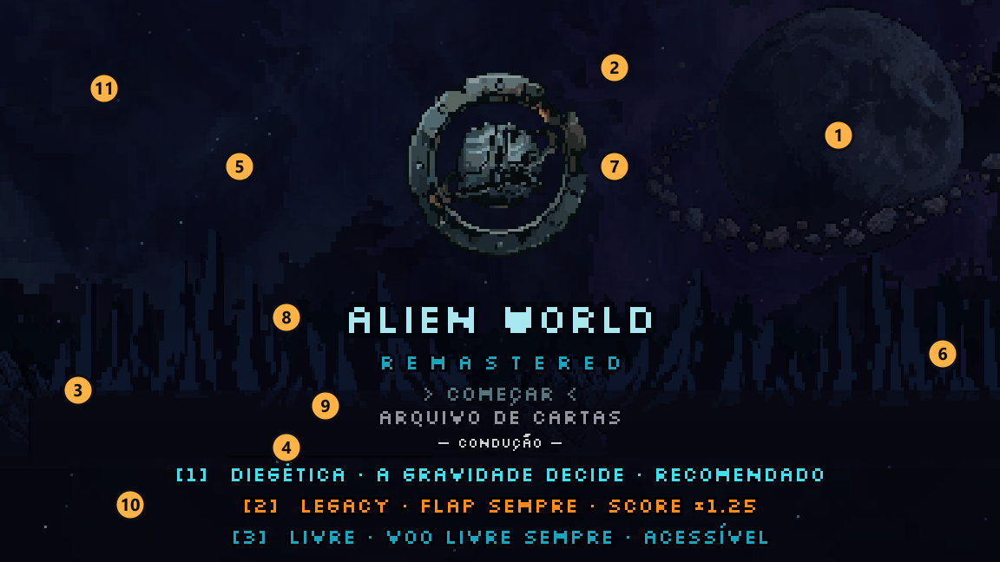
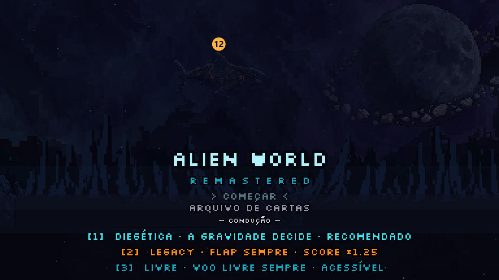
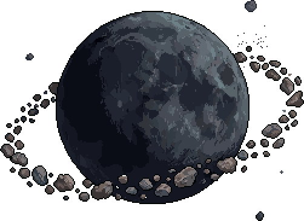
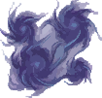
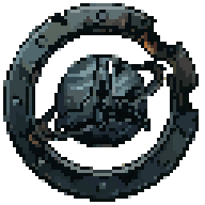
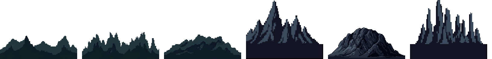
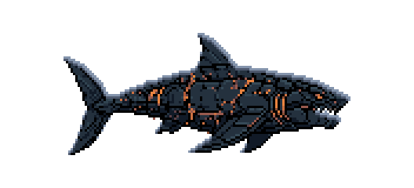
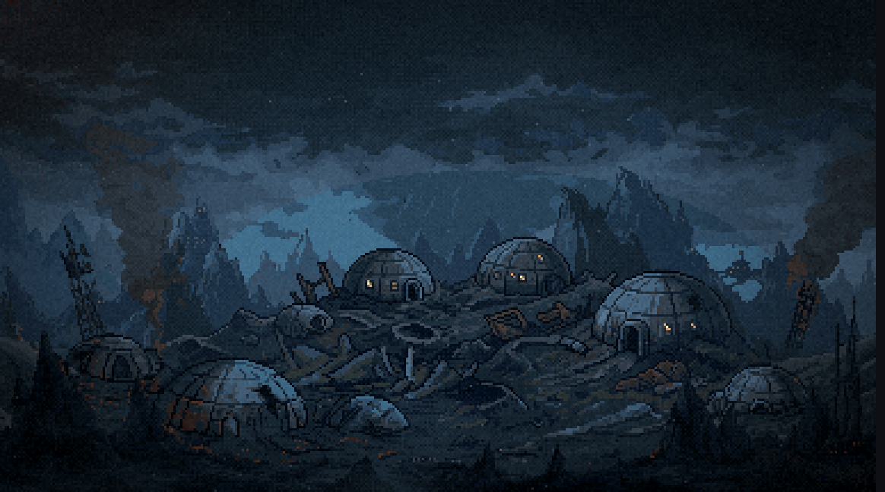

Bloco E · o menu refeito · abertura
19/10/2026. Antes de gerar qualquer arte: o menu de hoje, peça por peça, e a primeira pergunta.
O menu de hoje



- a lua, cinza, com o anel de asteroides
- as nebulosas, três manchas violeta e petróleo
- as montanhas de longe, sorteadas a cada vez que o menu abre
- as montanhas do meio e a faixa escura do chão, onde o texto pousa
- a bruma e o véu, manchas escuras que passam na frente do Leviatã
- a névoa baixa, duas faixas no horizonte
- o emblema, o anel com a nave
- o título e o subtítulo "R E M A S T E R E D"
- a lista: COMEÇAR e ARQUIVO DE CARTAS
- as três conduções
- as estrelas, uma dúzia piscando
- o Leviatã, o nado do bloco D (fica)
As peças, soltas





O que eu vejo
O menu é a última cena do jogo ainda montada com peças soltas (o diorama de julho: estrelas, manchas de nebulosa, uma lua do PixelLab e montanhas repetidas). Desde então, as cenas do jogo viraram pinturas assadas em 384×216, com luz e névoa pintadas dentro. O menu ficou para trás, e é a primeira coisa que se vê.
Ele também não diz onde estamos: a lua com anel não aparece em nenhuma fase, e as montanhas são as genéricas do começo do projeto.


Pergunta 1 · o lugar que o menu mostra escolha
minha apostaA · a colônia na lua de Kepler, à noite, vista do chão. As cúpulas com as janelas acesas, e o Leviatã cruzando o céu acima dela, enorme e longe, como uma ameaça que passa. O menu vira o "antes" da história: a cena final destrói essa mesma colônia. E o jogo começa ali, porque a F1 decola dela.
B · a lua de Kepler vista do espaço. O lado noturno com as luzes da colônia (como o plano largo do capítulo 5), e o Leviatã nadando na frente dela.
C · o lugar de hoje, com arte nova. Montanhas alienígenas e uma lua no céu, cada peça refeita.
D · outra ideia sua, de preferência com uma referência (jogo, filme, imagem).